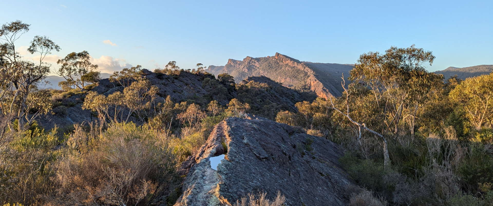
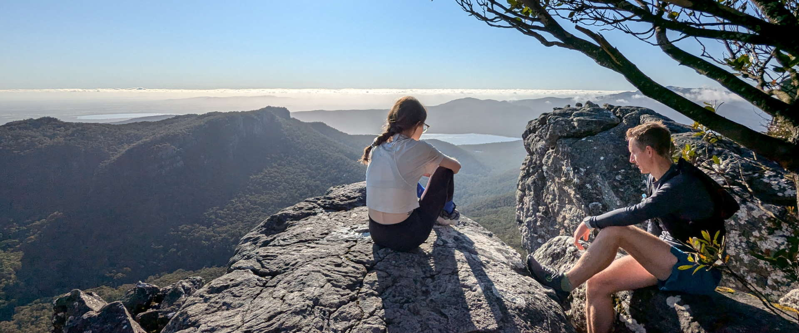
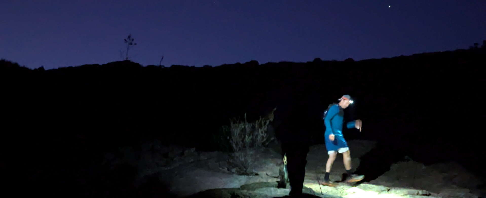
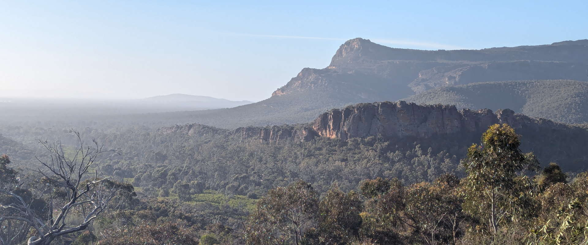

we are GTR
A platform to connect you to the spectacular world-class trail
running in the Gariwerd/Grampians National Park, curated by super welcoming
local runners to make a positive impact.
We're also an incorporated not-for-profit entity,
enabling us to steer the growth of both the
permanent and visiting trail running community
in a consistent and sustainable way.

we connect
We educate and foster the connection
to the surrounding environment and
appreciation for the cultural significance
of the area.
We increase community connection,
while positively influencing mental and
physical health.
We connect visiting and local trail
runners, encouraging destination trail
running trips outside of peak periods.

we run
Friday morning is our regular weekly run, usually meeting in Halls Gap or
nearby. The Friday run is for everyone, regardless of pace or trail experience.
stay tuned to the socials for the start time & location, then it's as simple as
turning up!
On the weekends we may venture further afield. Our specials board may
require an intermediate or advanced trail background. To join a run on the
specials board, send a DM ahead of time and we'll work out logistics.
Want to check out the trails by yourself?
We can point you in the right direction. Check our feed to see a whole bunch
of runs from entry-level to super-challenging! Enjoy, be safe, and please look
after the amazing running trails in Gariwerd.

we acknowledge
Gariwerd Trail Running acknowledges the Djab Wurrung
and Jardwadjali as the Traditional Owners and original custodians of Gariwerd,
including their unique ability to care for Country and deep spiritual connection to it.
We honour Elders past and present and emerging whose knowledge and wisdom has
ensured the continuation of culture and traditional practices.
